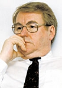
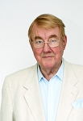
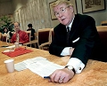

TV-Chef Sam Olof Nilsson
Journalist, programdiektör, VD SVT, Directorate Award, hedersDr vid LTH.
| Född: | 1936-07-18 Bastuträsk, Bastuträsks kbfd, Norsjö sn. [1] |
|---|
| Vigsel: | 1958-11-01 Arvidsjaurs kyrka, Arvidsjaurs kn. [2] |
|---|
| Vigsel: | 1979-11-14 Sv Ambassaden, Paris. [2] |
|---|
| Vigsel: | 1995-07-21 Hilleshög kyrka, Ekerö, Stockholms län. [2] |
|---|
Noteringar
Nilsson, Sam, f. 1936, TV-man. Efter arbete som journalist i konservativ press blev N. 1964 PR-chef i Högerpartiet och 1966 dess partisekreterare. Han anställdes vid Sveriges Radio 1969 som reporter på TV:s nyhetsredaktion. År 1972 utsågs N. till chef för TV 1:s nyhetsredaktion, 1979 till programdirektör och chef för TV 1. Åren 1981-99 var han VD i Sveriges Television.
Källa: www.ne.se/sam-nilsson Vem är de
Sam Olof Nilsson, född 18 juli 1936 i Bastuträsk, Bastuträsk kbfd, Norsjö socken i Västerbottens län, är en svensk Moderat politiker, journalist och företagsledare.
Sam Nilsson började sin journalistiska bana vid Nordsvenska Dagbladet i Skellefteå 1956. Under 1960-talet hade han en rad uppdrag inom Högerpartiet (idag Moderata Samlingspartiet), bland annat som informatör 1959 vid dess Informationstjänst och dess informationschef från 1960, PR-chef 1964-66 och partisekreterare 1966-69. Han var från 1963 också redaktionschef för partiets medlemstidskrift Medborgaren. 1969 anställdes han (tillsammans med flera andra partipolitiskt aktiva av olika kulörer) som nyhetsjournalist vid Sveriges Television och blev biträdande nyhetschef för den centrala nyhetsredaktionen där 1970, innan han 1972 utnämndes till chef för TV1:s nyhetsredaktion 1972, då Sveriges Television vid det laget hade uppdelats i två kanaler. 1979 avancerade han så till programdirektör och kanalchef för hela TV1. Två år senare, 1981, utsågs han till VD för Sveriges Television, en post han kom att inneha i nitton år till och med 1999 och var vid det laget nästan synonym med Sveriges Television och den TV-chef som suttit längst på sin post i hela Europa.
Han var styrelseordförande för Nordvision 1979-81, vice ordförande för den internationella delen av det amerikanska International Council of the National Academy of Television Arts and Sciences 1983-88 och har också haft ett flertal andra styrelseuppdrag vid bland annat Dramaten, Svenska Filminstitutet, Drottningholmsteaterns Vänner, Nämnden för psykologisk beredskap och inom Umeå universitet.
För att uppmärksamma Nilssons långvariga och förtjänstfulla insatser inom Sveriges Television och det internationella arbetet för stärkandet av public service-formen, där Sveriges Television beskrevs som ett föredöme, tilldelades han vid Emmy Award-galan i New York, november 1998 det prestigefulla priset Directorate Award, världens främsta TV-chefsutmärkelse av International Council of the National Academy of Television Arts and Sciences.[1]
Under flera år var han en viktig drivande kraft i uppkomsten av den stora satsningen kring Luleå tekniska universitets Campus Piteå med skapandet av Musikhögskolan i Piteå och centret Acusticum med forsknings- och företagsby, kultur- och mediautbildningar, konserthus med mera med invigning 2003. För sina insatser utnämndes han 2002 till hedersdoktor vid Luleå tekniska universitet [2] och 2011 tilldelades han det norrländska hederspriset Stålbjörnen.[3]
I början av 1990-talet gifte han sig med sin ungdomskärlek konstnärinnan Martha Edelheit, som han varit åtskild från på var sin sida av Atlanten i mer än 35 år och sköter nu sin gård på Svartsjölandet utanför Stockholm.[4]
Referenser
1. SVT-arkivet 1998, om TV-chefspriset
svt.se/2.10175/1.148132/utskriftsvanligt_format
2 Luleå Tekniska Universitet - Hedersdoktorer [Min komplettering]
www.ltu.se/research/akh/Hedersdoktorer
3. NSD 16 november 2011, om Stålbjörnen-priset
www.nsd.se/nyheter/lulea/artikel.aspx?ArticleId=6528187
4. Aftonbladet 21 december 1999, intervju inför pensioneringen om SVT, äktenskapet etc
wwwc.aftonbladet.se/nyheter/9912/21/wennman.htmlt
Källa: sv.wikipedia.org/wiki/Sam_Nilsson
Personhistoria
| Årtal | Ålder | Händelse |
|---|
| 1936 |
|
Födelse 1936-07-18 Bastuträsk, Bastuträsks kbfd, Norsjö sn [1] |
| 1947 |
10 år |
Brodern Jan Nilsson föds 1947-03-30 Arvidsjaurs fs, Arvidsjaurs sn |
| 1958 |
22 år |
Vigsel Kerstin Emelina Edin 1958-11-01 Arvidsjaurs kyrka, Arvidsjaurs kn [2] |
| 1961 |
24 år |
Fadern Oskar Adolf Nilsson Moritz dör 1961-04-01 Vikborg 1:22, Bastuträsk kfbd, Norsjö kn [3] |
| 1975 |
38 år |
Makan Kerstin Emelina Edin dör 1975-06-01 Centralv 27, Täby, Täby fs, Täby kn [4] |
| 1979 |
43 år |
Vigsel Marta Kennedi 1979-11-14 Sv Ambassaden, Paris [2] |
| 1985 |
48 år |
Modern Ragnhild Margreta Eriksson dör 1985-04-10 Fältjägarev 28, Skellefteå, Skellefteå lfs, Skellefteå kn [5] |
| 1995 |
59 år |
Vigsel Martha Norma Ross-Edelheit 1995-07-21 Hilleshög kyrka, Ekerö, Stockholms län [2] |
| 2012 |
75 år |
Makan Marta Kennedi dör 2012-02-18 Stockholm [2] |
| 2015 |
79 år |
Brodern Jan Nilsson dör 2015-10-21 |
Dokument
Källor
| [1] | SCB Födda AC Bastuträsk kbfd 22/1936 |
| |
| | |
| [2] | Sam Nilsson |
| |
| | |
| [3] | DB, PA / DOR 61 |
| |
| | |
| [4] | Mtl 71 / RTB 75 |
| |
| | |
| [5] | RTB 85 / SPAR 90 |
| |
|
|  |
1999-06-04. Sam Nilsson, VD på SVT
Rapport hotas av kris på SVT
Foto: ÅKE ERICSON
Text: Anders Johansson
Aftonbladet: 1999-06-04
wwwc.aftonbladet.se/nyheter/9906/04/svt.html
|
| |
|  |
2002. Sam Nilsson. Svenska politiker, journalist och chef. Han blev chef för nyhetesavdelningen på SVT 1977 och chef för kanal 1 på SVT 1979. År 1981 utsågs han till verkställande chef för SVT, en position han innehade fram till 1998. Nilsson är djupt involverad i utvecklingen av Acusticum som helhet. Han tilldelades en "TD honoris causa" från Luleå tekniska universitet 2002.
Ledamot i projektgruppen Acusticum, Piteå, Musikhögskolan, Luleå Universitet
acusticumorgan.com/project-group
|
| |
|  |
2005-11-30. Sam Nilsson, tidigare chef för SVT, avbryter ett samarbete med universitetet, där han är hedersdoktor. Orsaken är ett bråk om en räkning. Ett slag i ansiktet, anser Nilsson.
Fotograf: Kurt Engström
www.nsd.se/nyheter/artikel.aspx?ArticleId=3509205
www.acusticum.com/om-acusticum/
|
|
{kind=link}
{kind=link}
{kind=link}